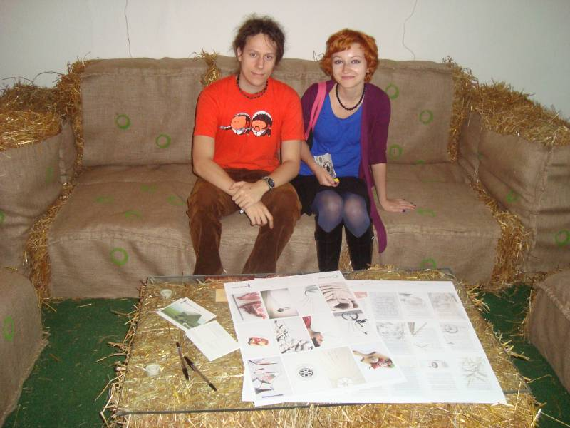
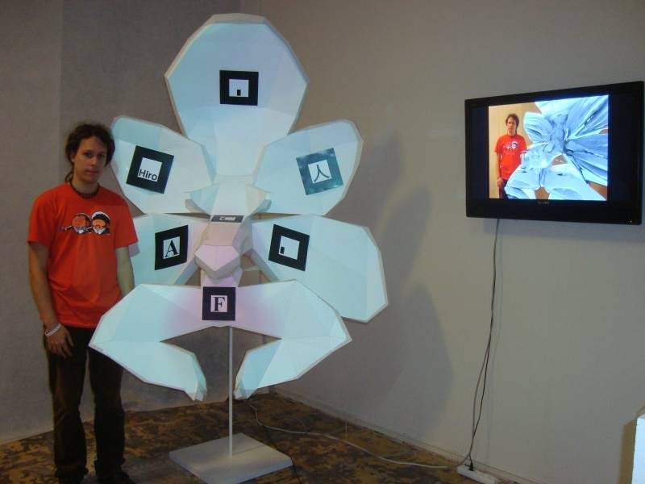
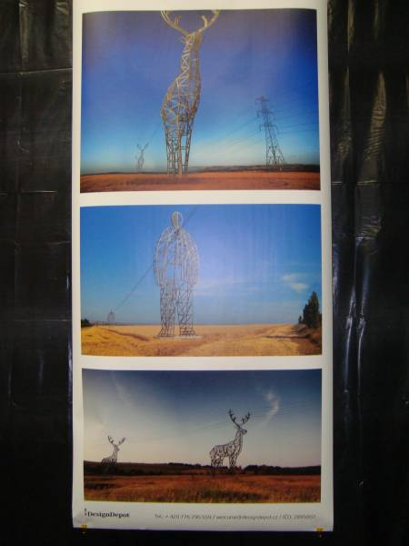
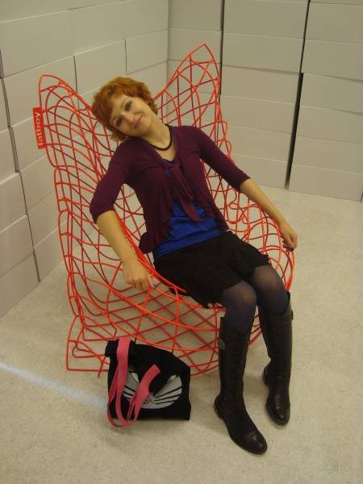
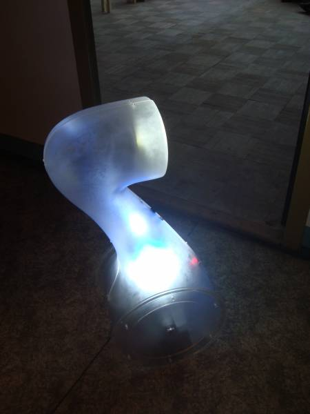
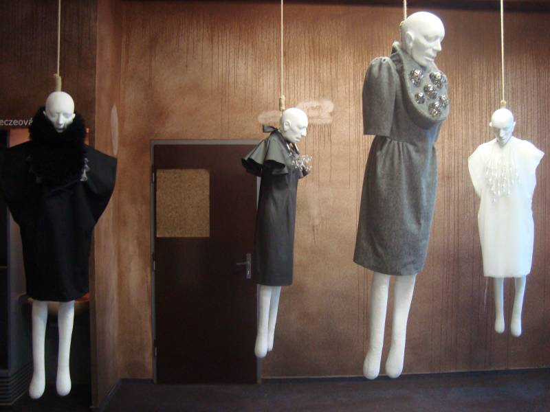
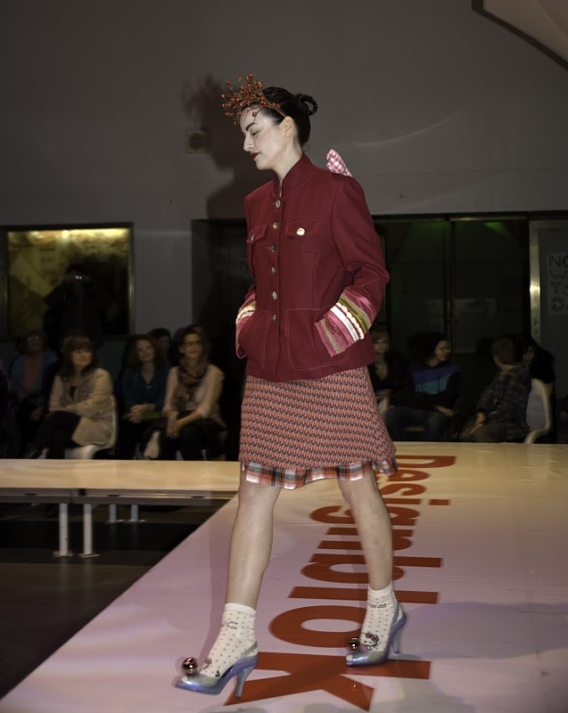

V těchto dnech probíhá v Praze již dvanáctý ročník dnů designu, který přináší spoustu prezentací novinek ve světě designu, výstav, módních přehlídek a přednášek. Designblok se koná na 40 místech v Praze, v galeriích, výstavních síních i prestižních obchodech se špičkovým designem a módou. Mně se poštěstilo navštívit dosud největší Superstudio Designbloku v rozlehlé budově na Bubenské. Pět pater vystavovatelských ploch se nám postaralo o zábavu i bolavé nohy na celé dlouhé odpoledne :-)…Předně bych ale asi měla vysvětlit, proč jsem se vlastně na výstavu vydala. Nemůžu říct, že bych se o design někdy předtím kdovíjak zajímala. Vpodstatě jsem si myslela, že se tady budou prezentovat spíš nové technologie ve výrobě a podobné věci. Z omylu jsem byla brzy vyvedena, ale k tomu až později. Hlavním důvodem mé návštěvy v Praze byl fakt, že na Designbloku vystavoval spolu s několika dalšími studenty z Prahy taky Péťa, a protože projektu věnoval hodně práce, s pýchou jsem se rozjela na výsledné dílko podívat na vlastní oči :-) !
Výstava byla opravdu hodně rozmanitá a každý si tu zaručeně musel přijít na své. Mně osobně úplně nejvíc zaujal nábytek pro kočky :D…stylový bytový doplňek ve tvaru různých písmen abecedy měl splňovat základní kočičí potřeby - skrýš, posezení a škrabadlo na drápky :-). Celou prezentaci navíc doplňovala vtipná instruktážní reklama promítaná na plátno - no nekupte to svojí kočičce !


Další zajímavostí pro mě byla poměrně rozsáhlá výstava zabývající se ekologickým tématem - v několika místnostech od stropu až po zem polepených kartony se prezentovaly ekologicky i ekonomicky šetrné obaly - ať už se jednalo o obaly na kosmetiku, potraviny, lahve na nápoje nebo saponáty.

Delší čas jsme strávili taky u prezentace poměrně známého hnutí Duha (alespoň já jejich reklamy vídávám občas v šalině). Toto hnutí prosazuje mimo jiné přijetí zákona, který závazně stanoví, že Česká republika bude snižovat exhalace skleníkových plynů o 2% ročně. Nový zákon by měl posílit ekonomiku, snížit účty rodinám, zajistit zdravější život pro každého a hlavně srazit náš příspěvek ke globálnímu znečišťování. Z prezentace jsme si odnesli poučný plakát, který si vyvěsíme na ledničku jakožto inspiraci, jak žít lépe a zdravěji :-). Můžeme se tu dočíst, jak podpořit místní ekonomiku, proč je voda z kohoutku lepší a kolik zbytečného odpadu za svůj život vyprodukujeme, aniž si to uvědomíme.

Pohovka ze slámy :)
Péťův projekt “Mimikry” se mi samozřejmě taky moc líbil, ikdyž u něj chyběla instruktáž, a vzhledem k tomu, že se jednalo o projekt interaktivní, spousta lidí ho nepochopila. Spolupracoval na něm společně s laboratoří Modul, která hledá nové technologie využitelné v umění a vytváří projekty na pomezí designu, volného umění a vědních oborů. Do obšírnějších informací o projektu se raději coby laik nechci pouštět :-). Věřím, že Péťa na blog co nevidět také přispěje článkem o Designbloku, kde se vše podstatné dozvíte. Každopádně se podělím alespoň o fotografie modelu orchideje, která se na obrazovce mění v kudlanku :-)…

Péťa u svého projektu :)


Určitě jsem ještě na spoustu zajímavostí zapomněla, ale v tom obrovském množství se není ani čemu divit. Na následujících fotografiích bych ráda vypíchla ještě pár vymykajících se projektů…

Tohle mají v Rusku :)…

Pohodlné? Ani trochu :D!

Projekt Živé věci, který se zabývá interaktivním designem, prezentoval inteligentní svítidlo pojmenované Tvor.

Projekt Polarita si hraje se splynutím skleněného šperku a oděvu.

No a to by bylo asi všechno :-). Výstavu jsme zakončili už značně znavení okolo sedmé hodiny módní přehlídkou kolekce La Femme Mimi, která byla doplněna poměrně extravagantními čelenkami od Jane Bond. Pro mě bylo velmi vítaným zpestřením to, že po pódiu se krom modelek producírovali taky vymódění psíci :-)…Kolekce nebyla úplně podle mého gusta, ale možná bude něco na tom, že my Češi jsme zbytečně moc konzervativní a nepotrpíme si na barvy. A koneckonců podzim je sám o sobě dost šedivý a smutný, takže proč ho ještě zbytečně dělat víc ponurým tmavými kabáty. Nicméně trend ponožek v lodičkách nebo vůbec čemkoliv trochu otevřeném stejně jako plastové botičky Melissa (byť za nimi stojí ikona Vivienne Westwood a boty skutečně krásně voní, jak jsem se na Designbloku na vlastní čuch přesvědčila :D) asi skutečně nikdy nepochopím…

La Femme Mimi
Výstavu bych každopádně doporučila každému, kdo má v Praze o víkendu trochu času. Její návštěva rozhodně stojí zato, je doprovázena bohatým programem a každý si tam najde něco zajímavého a inspirujícího.
Upřímně ale ze současných pražských výstav uvažuju o Decadence now! Designblok mě nikdy moc nelákal. Tak uvidíme.